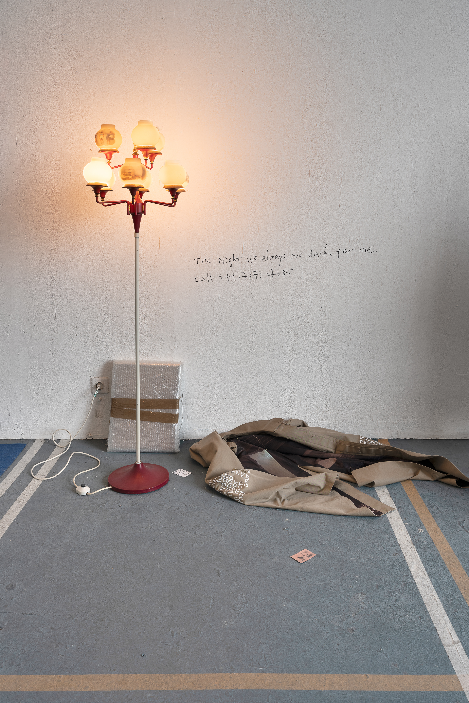
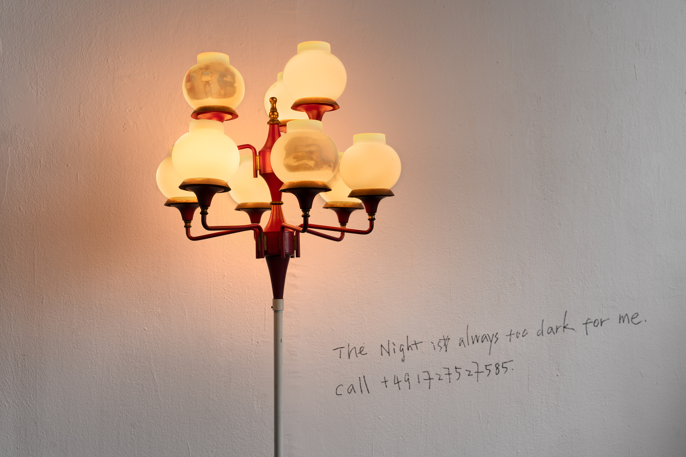
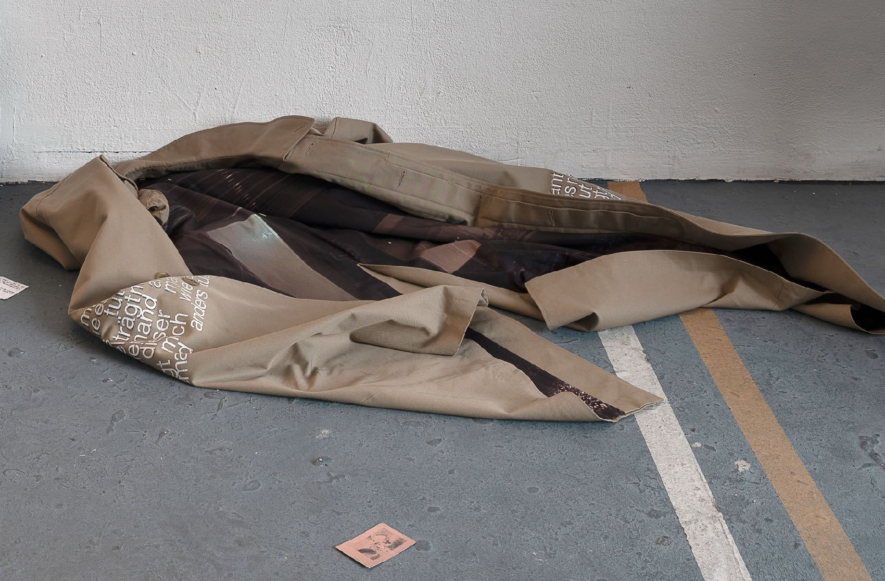
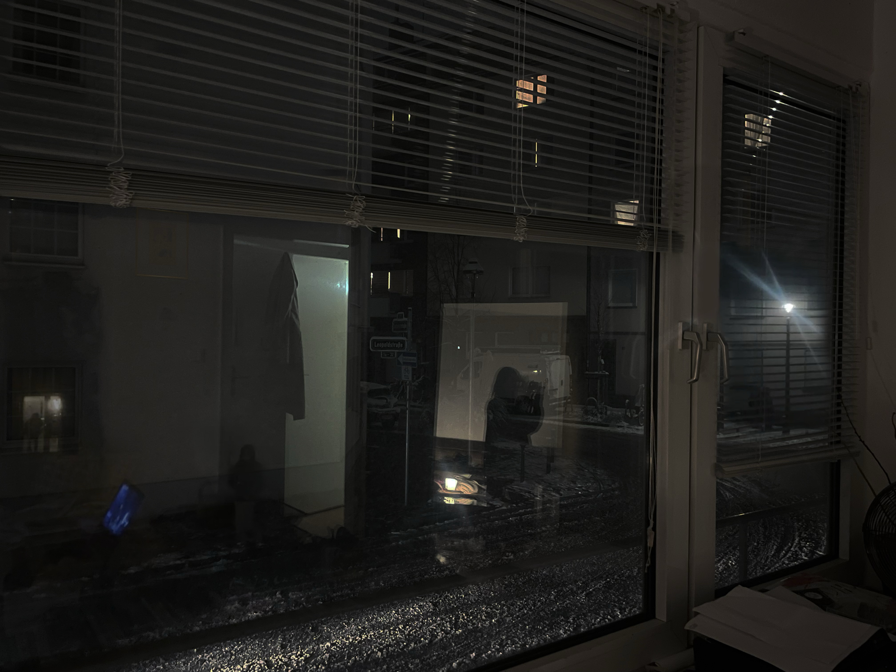

Floor lamp with images, garment by Maria Krol with artist’s printed lining, scattered name cards, wrapped original etching by Marie Laurencin (23 × 15 cm)
In this group show set in a flea market, her work The Night Is Always Too Dark for Me depicts the character of the street vendor, known in China as 走鬼 (flee ghost). The artist connects it with the rebellious gesture of physical labor and re-examines the dynamics of power institutions.
The wrapped package tells the artist’s personal stories about her unpaid curation job last year, at the end she received an art piece from French artist Marie Laurencin as her payment. As part of her performance, the artist tells the story and sells this artwork for the same amount as her labor work, which is 1000 Euros. Visitors will have the opportunity to purchase the painting during Rundgang, raising questions about the relationship between the attribution of value and actual artistic labor.
The scene on site suggests a state of absence and exhaustion, which is related to the psychological state after physical activities and how our body continues to move forward.



